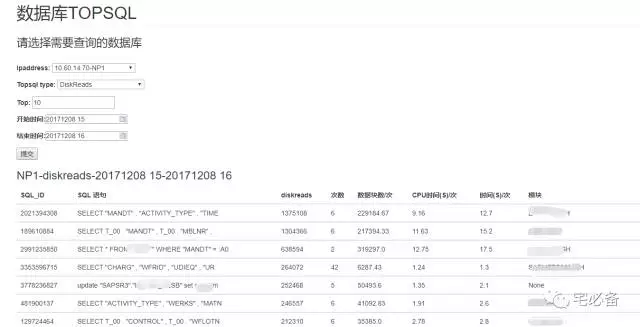

利用Django在前端展示TOP SQL信息(附源代码)
2017-12-08 Python 宅必备
开发环境
操作系统:CentOS 7.4
Python版本 :3.6
Django版本: 1.10.5
操作系统用户:oms
数据处理:pandas
通过上面我们已介绍了如何定时获取TOP SQL语句以及如何利用pandas处理数据
这节讲如何让其在前端显示
建立页面的步骤

我们还是通过这张图的步骤来说明如何建立页面
1. urls.py页面
from django.conf.urls import url, include
from monitor import views
urlpatterns = [
url(r'^$', views.index, name='index'),
url(r'^oracle_command/$',views.oracle_command, name='oracle_command'),
url(r'^commandresult/$',views.commandresult, name='commandresult'),
url(r'^oracle_status$',views.oracle_status, name='oracle_status'),
url(r'^oracle_performance$',views.oracle_performance, name='oracle_performance'),
url(r'^performance$',views.performance, name='performance'),
url(r'^oracle_topevent$',views.oracle_topevent, name='oracle_topevent'),
url(r'^check_topsql$',views.check_topsql, name='check_topsql'),
url(r'^addbaseline$',views.addbaseline, name='addbaseline'),
url(r'^check_hitratio$',views.check_hitratio, name='check_hitratio'),
url(r'^linux_list$',views.linux_list, name='linux_list'),
]
check_topsql为展示Oracle TOP SQL的页面
2. views.py
def check_topsql(request):
if request.method == 'POST': # If the form has been submitted...
form = charts_topsql(request.POST) # A form bound to the POST data
if form.is_valid(): # All validation rules pass
top = form.cleaned_data['top']
starttime1 = request.POST['starttime']
endtime1 = request.POST['endtime']
ipaddress = form.cleaned_data['ipaddress'].split(':')[0]
tnsname = form.cleaned_data['ipaddress'].split(':')[1]
topsql_type= form.cleaned_data['topsql_type'].split(':')[0]
topsql_col=form.cleaned_data['topsql_type'].split(':')[1]
title=tnsname+'-'+topsql_type+'-'+str(starttime1)+'-'+str(endtime1)
if starttime1 =='' or endtime1 =='':
return HttpResponse('Please give the Start and End time')
else:
starttime=int(str(time.mktime(time.strptime(starttime1,'%Y%m%d %H'))).split('.')[0])
endtime=int(str(time.mktime(time.strptime(endtime1,'%Y%m%d %H'))).split('.')[0])+60
if starttime>endtime:
return HttpResponse('The Start time must larger than the End time')
#starttime=int(str(time.mktime(time.strptime(starttime1,'%Y%m%d %H:%M:%S'))))
#endtime=int(str(time.mktime(time.strptime(endtime1,'%Y%m%d %H:%M:%S'))))
else:
if topsql_type=='diskreads':
row=check_topsql_diskreads(starttime,endtime,ipaddress,tnsname,topsql_type,top)
elif topsql_type=='buffergets':
row=check_topsql_buffergets(starttime,endtime,ipaddress,tnsname,topsql_type,top)
elif topsql_type=='elapsedtime':
row=check_topsql_elapsedtime(starttime,endtime,ipaddress,tnsname,topsql_type,top)
elif topsql_type=='cputime':
row=check_topsql_cputime(starttime,endtime,ipaddress,tnsname,topsql_type,top)
elif topsql_col=='topsegment':
row=check_topsql_topsegment(starttime,endtime,ipaddress,tnsname,topsql_type,top)
elif topsql_col=='segmentsizechange':
row=check_segmentsizechange(starttime,endtime,ipaddress,tnsname,topsql_type,top)
else:
row=check_topsql_topevent(starttime,endtime,ipaddress,tnsname,topsql_type,top)
top10sql=row['top10sql']
#outsql=row['outsql']
if topsql_type=='buffergets' or topsql_type=='diskreads':
tr=['SQL_ID','SQL 语句',topsql_type,'次数','数据块数/次','CPU时间(S)/次','时间(S)/次','模块']
elif topsql_type=='elapsedtime':
tr=['SQL_ID','SQL 语句',topsql_type,'次数','平均时间(S)','CPU时间(S)/次','模块']
elif topsql_type=='cputime':
tr=['SQL_ID','SQL 语句',topsql_type,'次数','平均CPU时间(S)','执行时间(S)/次','模块']
elif topsql_col=='topsegment':
tr=['用户','对象名','分区名','对象类型','值']
elif topsql_col=='segmentsizechange':
tr=['用户','对象名','分区名','对象类型','表空间','大小/M','大小变化量/M','块变化量/Blocks','每天大小变化量/M']
else:
tr=['事件名称','等待时间','等待次数','平均等待时间','等待超时次数']
#dic ={'title':title,'tr':tr,'top10sql':top10sql,'outsql':outsql}
dic ={'title':title,'tr':tr,'top10sql':top10sql}
if topsql_type=='buffergets' or topsql_type=='diskreads':
return render_to_response('oracle_topsql_8.html',dic)
elif topsql_type=='elapsedtime' or topsql_type=='cputime':
return render_to_response('oracle_topsql_7.html',dic)
elif topsql_type=='topevent':
return render_to_response('oracle_topsql_5.html',dic)
else:
return render(request, 'check_topsql.html', {'form': form})
else:
form = charts_topsql() # An unbound form
d1=datetime.datetime.now()
etime= d1.strftime("%Y%m%d %H")
stime=(d1-datetime.timedelta(hours=1)).strftime("%Y%m%d %H")
dic={'form':form,'etime':etime,'stime':stime}
return render(request, 'check_topsql.html', dic)
上面的url设定调用views.py里面的check_topsql函数，该函数讲解如下:
-
首先判断请求的方法是不是post(提交表单前)，如果不是则打开check_topsql.html页面，charts_topsql为定义的表单，可在forms.py中定义
-
如果请求方法为post(提交表单后)，首先验证输入是否正确，如果正确则获取相应的ipaddress,tnsname,topsql_type等信息
-
接下来根据topsql的类型(物理读，逻辑读等)调用monitor/command/views_oracletopsql.py文件里面的方法来得到我们想要的数据，这个方法的讲解在上一章节，大家可自行查看
-
最后我们将TOP SQL相关的内容封装成字典重定向到相应的template文件中
3. template文件
这里我们使用oracle_topsql_n.html文件来显示TOP SQL
<div id='newadd'>
<h3>{{title}}</h3>
<table class="table">
<thead>
<tr>
{% for i in tr %}
<th>{{i}}</th>
{%endfor%}
</tr>
</thead>
{% for a,b,c,d,e in top10sql %}
<tbody>
<tr>
<td>{{a}}</td>
<td>{{b}}</td>
<td>{{c}}</td>
<td>{{d}}</td>
<td>{{e}}</td>
</tr>
</tbody>
{% endfor %}
</table>
</div>
这里通过一个表格来展现数据库TOP SQL的情况
Django允许在html文件内部使用for循环的形式来迭代列表
5.效果展示
首先是表单提交之前的界面
这里选择需要查询的数据库以及起止时间，时间越短越精确，其中Top栏位代表需要获取前多少个TOP SQL语句，默认为10
点击提交后会展示出TOP SQL 语句以及TOP 等待事件

6. 源代码位置
欢迎访问我的github主页查看源码
https://github.com/bsbforever/oms_django
TOP SQL监控已经讲完了，下次讲如何展示 Oracle性能趋势，如物理读，DB Time等